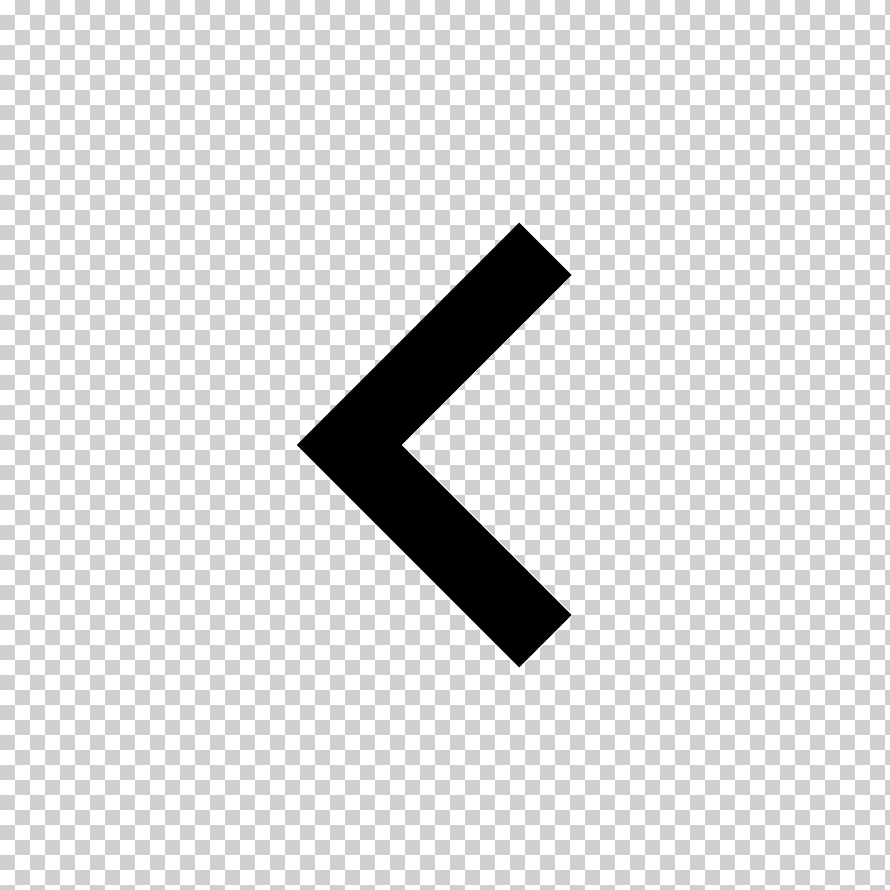

Registrar Datos del Paciente
Nombre del paciente:
Edad (años y meses):
Fecha:
Enfermero/a que valora:
Edad:
longitudcm (cm):
Agregar Dato
Borrar Datos
Imprimir
Talla para la Edad en niños de 0 a 2 años